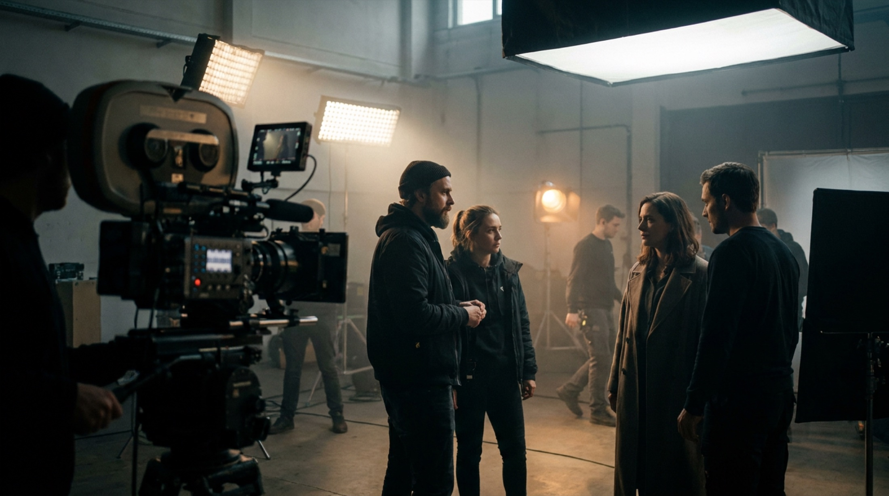
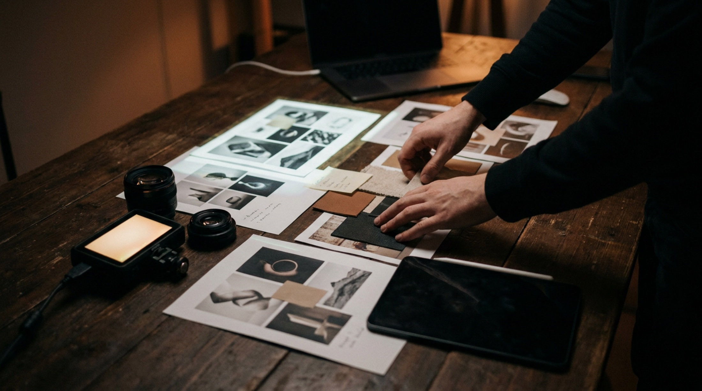

01
Film
Werbefilm & Produktfilm
Commercials, Trailer, Produktfilme und Social Cuts mit Konzept, Regie, Produktion und Postproduktion aus einer Hand.
Konzept · Regie · Schnitt · Sound · Color · Motion
DetailsAndreas Boehler entwickelt Film, Fotografie und visuelle Systeme für Marken, die einen starken Look, eine klare Story und ein verlässliches Produktionsgefühl brauchen. Der Fokus liegt auf wenigen Kernleistungen, die sich je nach Projekt mit Postproduktion, Motion, 3D, Virtual Production oder KI-gestützten Workflows verbinden lassen.

Commercials, Trailer, Produktfilme und Social Cuts mit Konzept, Regie, Produktion und Postproduktion aus einer Hand.
Konzept · Regie · Schnitt · Sound · Color · Motion
DetailsPortraits, Kampagnenlooks, Lifestyle-Serien und dokumentarische Markenmomente mit filmischem Blick auf Licht und Timing.
Portrait · Lifestyle · Kampagne · Reportage · Retusche
DetailsKameraarbeit, Licht, technische Planung, RED/ARRI-nahe Setups und Bildgestaltung für Produktionen, die einen präzisen Look brauchen.
Look · Kamera · Licht · Set · technische Preproduction
DetailsVisuelle Systeme, Kampagnenlogik, Layout, UI, Motion und Markenlook, damit Film, Foto und Design dieselbe Richtung haben.
Branding · UI · Kampagne · Motion · Guidelines
DetailsKI als kreative Kernkompetenz: für Moodboards, Prototyping, Research, Bild- und Video-Tests, Automationen und neue Produktionswege.
Prompting · R&D · Generative Video · Automation · Tool Research
FAQ
Manchmal reicht ein fokussierter Drehtag. Manchmal braucht es Konzept, Regie, Kamera, Fotografie, Postproduktion und KI-gestützte Vorbereitung zusammen. Entscheidend ist, was dem Ziel, dem Budget und dem Timing wirklich hilft.
Erfahrung in Entertainment, Healthcare, Industrie, Food, Hospitality, Interior, Consumer, Business und Digital - von schnellen Content-Produktionen bis zu regulierten Kommunikationsprojekten.
Europa-ParkMackMediaRulanticaEatrenalinYULLBE GOSAT.1Warner Bros.DJ BoBoVoltron Nevera
RocheNovartisPfizerAstraZenecaMSDAbbVieAcinoUniklinikum FreiburgBasileaActelionBoehringer IngelheimGalderma SpirigOctapharmaMovicol
ClariantSyngentaBachemARCONDISHuntsmanSONGWONineltecSMT
AmmoliteFol EpiChavrouxTartareCaprice des DieuxSaint AlbrayCoopWaldhausPiù Caffè ProfessionalSchwarzwaldmilchBongrain / Savencia
BeiersdorfNiveaWeledaPulpo
AdobeBMWDufryLexwareMesse Basel (MCH)MOVIN
Jahre berufliche Erfahrung in Konzept, Filmproduktion, Fotografie, Design und Postproduktion.
Teamgrößen bis zu rund 40 Personen in interdisziplinären Produktionen und Kampagnen.
Research, Prototyping und generative Workflows als feste kreative Kompetenz.
Internationale Auszeichnungen für Commercial, Regie, Editing, Sound und Visual Effects.